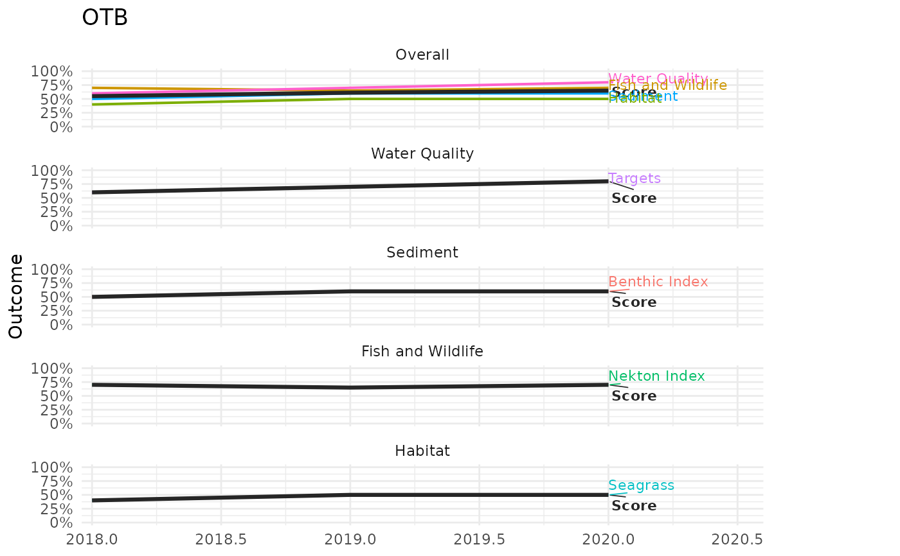
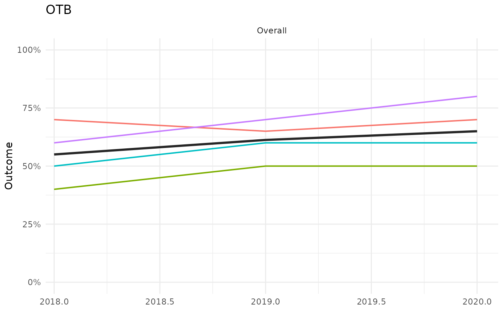
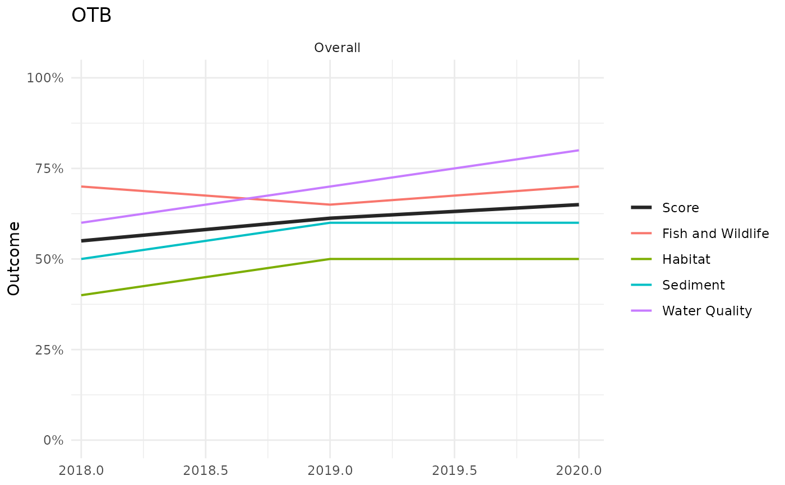

Faceted trend plot of indicator, category, and overall outcomes over time
Source:R/plot_trend.R
plot_trend.RdFaceted trend plot of indicator, category, and overall outcomes over time
Arguments
- wqoverall
output of
anlz_categoryfor water quality- sedoverall
output of
anlz_categoryfor sediment- fwoverall
output of
anlz_categoryfor fish/wildlife- haboverall
output of
anlz_categoryfor habitat- bay_segment
chr string, single bay segment to plot
- yr_range
numeric vector of length 2,
c(min, max)years to plot (inclusive). Defaults toNULL, plotting every year available inwqoverall,sedoverall,fwoverall, andhaboverall.- wt
named numeric vector of category weights, passed to
anlz_score- facets
chr vector, one or more of
"Overall","wq","sed","fw","hab"indicating which facet(s) to plot. Defaults to all five.- text
chr string, one of
"labels"(the default),"legend", or"none", controlling how series are identified."labels"draws a direct label on each line at its right-most value."legend"instead draws a conventional ggplot legend for the color scale, with"Score"always listed first."none"draws neither. Whentext = "labels", the extra right-margin/x-axis space reserved for labels is included, otherwise it's removed."labels"is preferred when more than one facet is shown, whereas"legend"works better whenfacetsselects only one or two facets.
Details
Calls anlz_score on the four category data.frames
to get the overall bay segment score and each category's own score across
all years for bay_segment, then plots up to five stacked facets
(one column, top to bottom, or a subset via facets): an "Overall"
facet with the bay segment score and one colored line per category
(wq, sed, fw, hab), followed by one facet per
category with that category's own score and one colored line per
indicator column of wqoverall, sedoverall, fwoverall,
haboverall. In every facet, the score itself is drawn as a thick
dark "Score" line and each component (category or indicator) is a
thinner colored line, identified either by a direct label or a
conventional legend depending on text.
Examples
wqoverall <- anlz_category(
wq_attain = data.frame(bay_segment = 'OTB', yr = 2018:2020, outcome = c(0.6, 0.7, 0.8))
)
sedoverall <- anlz_category(
sed_tbbi = data.frame(bay_segment = 'OTB', yr = 2018:2020, outcome = c(0.5, 0.6, 0.6))
)
fwoverall <- anlz_category(
tbni = data.frame(bay_segment = 'OTB', yr = 2018:2020, outcome = c(0.7, 0.65, 0.7))
)
haboverall <- anlz_category(
seagrass = data.frame(bay_segment = 'OTB', yr = 2018:2020, outcome = c(0.4, 0.5, 0.5))
)
plot_trend(wqoverall, sedoverall, fwoverall, haboverall, bay_segment = 'OTB')

# a single facet, with no series identification at all
plot_trend(wqoverall, sedoverall, fwoverall, haboverall, bay_segment = 'OTB',
facets = 'Overall', text = 'none')

# a conventional legend instead of direct labels
plot_trend(wqoverall, sedoverall, fwoverall, haboverall, bay_segment = 'OTB',
facets = 'Overall', text = 'legend')
